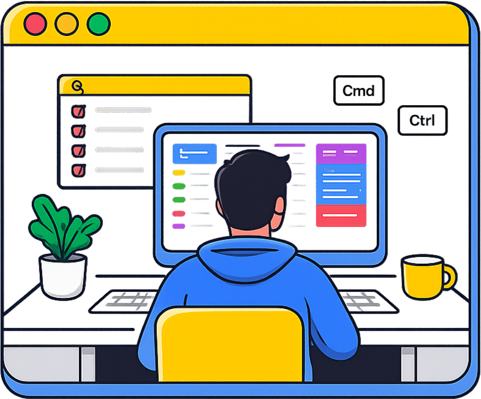
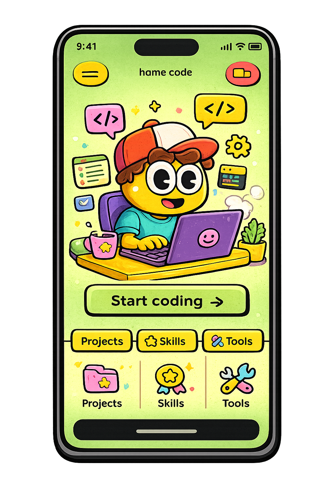

Master Your Keyboard, Work Faster
Get Started
Shortcut Hub is a productivity-focused platform designed to help users work faster by mastering keyboard shortcuts. The platform is built to make memorizing shortcuts easier using various methods.

While keyboard shortcuts can significantly improve speed and efficiency, they are often overlooked because they are hard to remember. As a result, users waste time on simple tasks, break their workflow, and never fully utilize the tools they use every day.
Instead of memorizing random commands, users are guided through an organized experience that makes shortcuts easy to understand and apply in real-world tasks. It ensures that what users learn can be immediately used to improve their workflow.
Users can reduce time spent on repetitive actions and work more efficiently. By minimizing unnecessary steps, it helps users get more done with less effort, whether they are studying, coding, or creating content.

Hi, I'm Prajwal, a 15‑year‑old tech enthusiast from India. I love coding, making robots, exploring tech and creating youtube content. I started learning to code when I was 10 years (2020) during the covid-19 pandemic, I started learning block coding through MIT app inventor at the age of 10, when I turned 12, I started learning HTML and CSS. I joined a coding class where I further learnt HTML and CSS. At the age of 14, I learnt Python and JS.
Learn more